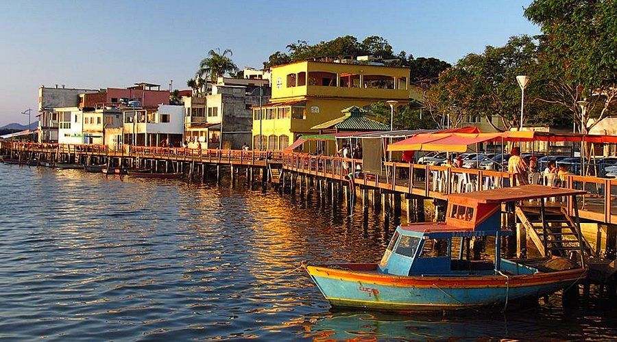
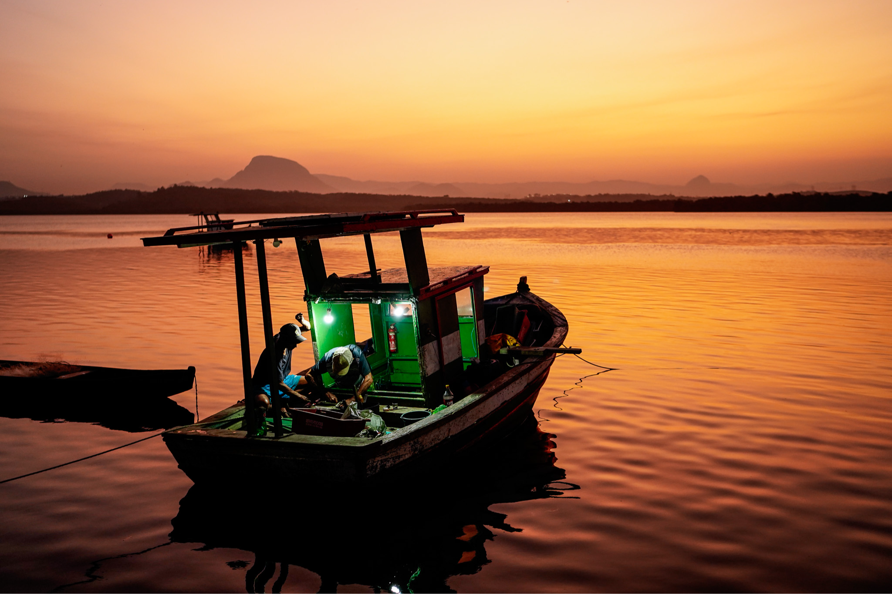

• O que é a Ilha das Caieiras?
A Fauna da Ilha das Caieiras, em Vitória, ES, é rica e diversificada, com destaque para espécies marinhas e terrestres que habitam o manguezal local. Entre os animais marinhos, encontram-se diversas espécies de peixes, moluscos e crustáceos, muitos dos quais são capturados pela comunidade e fazem parte da gastronomia da região. Além disso, aves como garças e outras espécies utilizam o manguezal como refúgio e fonte de alimento.
A paisagem é composta por manguezais, canais e áreas de mata atlântica, formando um ecossistema rico em biodiversidade. A fauna aquática é predominada por siris, caranguejos, ostras e diversos peixes estuarinos. Entre os mamíferos terrestres, podem ser encontrados gambás, saguis e outros pequenos animais que se adaptaram ao ambiente urbano e costeiro. A avifauna também é diversificada, incluindo garças, biguás e outras espécies típicas de manguezal.
A Ilha das Caieiras também se destaca pelo turismo cultural e gastronômico. O píer e o mercado do peixe são pontos de visitação que promovem o contato com a vida local. Com o passar do tempo, o bairro vem passando por processos de urbanização e valorização turística, ainda que enfrente desafios ligados à conservação ambiental e infraestrutura.

